Mingle — A Qin Tian's Worked Submission Example
Prepared on 6 November 2026. Owner: A Qin Tian. Peer reviewer: B Wang Yikai. This is the first discovery increment and a submission example. A's later integration/review duties continue.
Published as PR #9 — Ready for review. The implementation commit is e8cd17e; GitHub Java CI passed. A's Trello card is in Review, with independent review still pending. Open README.html for a browser preview of all instructions and images, or read the Markdown files directly.
Terminal-evidence correction: the two formatted test-report images were removed. This archive now contains 15 product/process captures; actual terminal captures remain pending. Use TERMINAL_EVIDENCE.md and the supplied PowerShell scripts to run and capture the checks live.
Start with WHAT_TO_SUBMIT.md. It tells every member what to build, test, capture and hand in. Then inspect A_progress.md as a completed implementation record and EVIDENCE_INDEX.md for the real screenshots.
| File/folder | What it contains |
|---|---|
| A_progress.md | Baseline versus new work, verification, one real defect and pending peer review |
| WHAT_TO_SUBMIT.md | Named B–F next steps, branch names and the common submission checklist |
| EVIDENCE_INDEX.md | Before/after, boundary, match/chat, mobile, test and board evidence |
| TEST_RESULTS.md | Exact test scope, commands, process results and limitations |
| REVIEW_CHECKLIST.md | B's independent reproduction checklist; currently pending |
| CONTRACTS_TO_CONFIRM.md | Implemented discovery contract and decisions requiring member discussion |
| source-changes | Exact changed feature/test files; apply to a full project checkout |
| evidence | Original outputs, JUnit XML, browser JSON and SHA-256 source manifest |
| images | Actual browser/board captures; relative image links work after extraction |
The included source changes are an increment, not a second complete Maven project. Use the full repository and branch w2/a-discovery to run A's version. B–F start their own task branches from current main; A's feature branch is a worked example until it is reviewed and merged. Their existing named task packages remain their starting instructions.
The automated results are 31 Java tests passed (19 existing + 12 new) and 11 browser groups passed. Both processes exited 0. Read the failure/retest evidence rather than presenting this as an uninterrupted first-time success.
The implementation and evidence preparation used Codex assistance. Qin Tian still needs to understand and explain the changes; Wang Yikai's review and each teammate's own work must be recorded when they actually happen. No independent review, user interview or completion of B–F's increments is implied.
What Each Member Does Next
Use A's example to copy the submission structure and evidence quality. Implement your own assigned increment and run your own checks. The baseline has already been merged through PR #8; create your task branch from the latest main. Do not start development on the preserved W1 research branches.
| Member | Branch | First concrete change | Evidence to show |
|---|---|---|---|
| B Wang Yikai | w2/b-interface | Live unsaved profile preview and a selected-interest counter | Preview before/after typing; five-interest boundary; keyboard and 390 px checks |
| C Tao Jiacheng | w2/c-accounts | Change-password form requiring the current password | Wrong-current-password rejection; valid change; old login fails/new login succeeds; agreed session policy |
| D Zhou Ziyue | w2/d-connections | Per-participant unread state and older-message loading | Two sessions with unread changes; more than 100 messages; no gaps/duplicates; outsider denial |
| E Wu Zhuoda | w2/e-safety | Staff-only report queue and handling status | Staff workflow; ordinary-user/anonymous denial; private notes and valid status handling |
| F Song Peitong | w2/f-runtime | Safe backup/restore on disposable H2 data | Known data before/after restore; refused unsafe or running target; clean-copy reproduction |
The detailed task and six scenario groups remain in each member's named MD/ZIP package. Check shared changes with A before editing common fields/routes. The proposed boundaries are listed in CONTRACTS_TO_CONFIRM.md; discussion and agreement are still required.
A small submission that someone can review
- Implement a focused 1–3 hour slice on your W2 branch. Describe the baseline behavior and what changed.
- Commit the feature and meaningful executable tests together. Include at least three relevant scenarios in the first feature PR; complete the six planned groups by the internal 22 November checkpoint. Reused tests must be identified as reused.
- Save exact commands, source commit/hash, exit code and readable output. Keep a real failure and retest when one occurs. Do not manufacture a failed run.
- Capture at least three purposeful images: a normal outcome, a boundary/error outcome and executable test results. Add 390 px or two-session images when the assertion needs them. A screenshot of the interface does not replace an executable test.
- Complete your own progress MD: actual change, expected/actual checks, defect/fix, remaining limits, references/AI assistance and reviewer status. Put images in the same folder's images/ subfolder and link them relatively.
- Open a PR to main and link it from your Trello card. Move the card to Review when the implementation/checks are ready. Record peer review and fixes; move to Done only after acceptance/merge.
Suggested evidence layout:
docs/progress/week2/
B_progress.md
images/B_normal.png
images/B_boundary.png
images/B_tests.png
evidence/B_test-output.txt
Use your own member letter. Include test source in the project, not just in a screenshot. Do not commit target/, caches, node_modules/, passwords or runtime databases.
Review and weekly process evidence
B reviews A; C reviews B; D reviews C; E reviews D; F reviews E; A reviews F. A integrates accepted work. Review means running the agreed checks and recording what was actually examined, not marking a box because a PR exists.
Each week, retain roughly three useful genuine discussion/work/review photos and a board capture after updating actual status. Record date, topic, participants confirmed by the team, decision and next owner. Do not stage a retrospective record as if it happened earlier. Classroom/team photographs remain in the local photo archive; this worked example contains product/test/process screenshots.
Send A the PR link, progress MD, test outputs and screenshots together. A's A_progress.md, TEST_RESULTS.md and REVIEW_CHECKLIST.md demonstrate the format.
A Qin Tian — Week 2 Progress
Date: 6 November 2026 · Branch: w2/a-discovery · Reviewer: B Wang Yikai.
Implementation and local verification: complete for this increment. Independent peer review: pending. Later member-contract agreements and integration: pending actual team work.
PR #9 is Ready for review. Implementation commit: e8cd17e. GitHub Java CI passed. The Trello card moved from Doing to Review after the passing local checks; the PR remains unmerged for peer review.
Starting point and actual change
The baseline already handled registration, saved profiles, discovery ranking, like/skip gestures, mutual connections, basic chat and safety receipts. Those are retained baseline capabilities, not new work in this submission.
This increment adds a visible eligible-profile count and removable filter chips, preserves the other selected filter when one chip is removed, and gives empty results useful recovery actions. It counts only eligible skipped profiles before offering to revisit. It also adds a separate mutual-match feedback page with the actual participant, actual shared-interest intersection and a button opening that connection's conversation. The existing drag/button/keyboard submission mechanism is reused and checked.
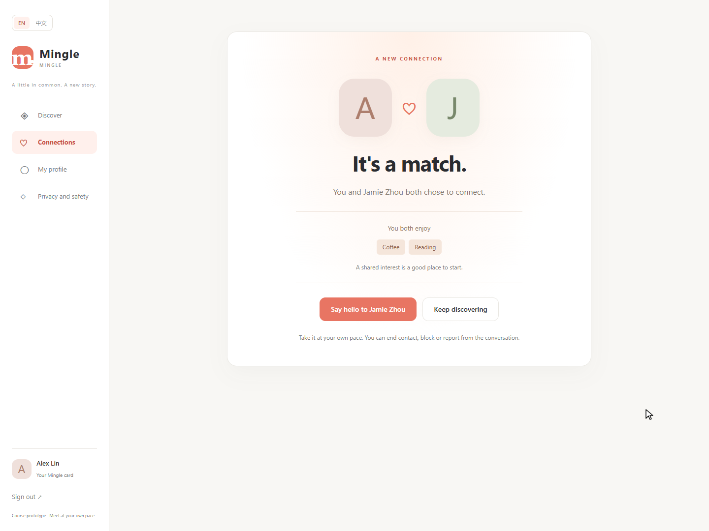
Code and integration
Changed implementation: DiscoveryController, DiscoveryService, new MatchController, discover.html, new match.html, app.css and both message bundles. Added tests: DiscoveryRegressionTests and the optional isolated browser runner. Exact paths/hashes: changed-files.json. Full build inputs: source-manifest.json.
There are no entity/schema changes in this increment. The new GET /matches/{id} requires an active connection participant; third parties, anonymous requests and ended/blocked connections cannot read active feedback. POST decisions remain CSRF protected. D continues to own unread/history work, C account/session changes, E restricted report handling, B profile preview, and F backup/restore.
What was verified
- A-01: filters, shared-interest truth, invalid-filter normalization and visible counts.
- A-02: exclusion rules and eligible revisitable profiles, including hidden users and blocking in either direction; the baseline self-exclusion tests remain included.
- A-03: one-sided likes, reciprocal likes and repeated server submissions using one connection.
- A-04: short/committed mouse and emulated-touch gestures, arrow keys and buttons; request counts checked in the browser.
- A-05: appropriate empty recovery, active participant-only feedback, actual shared interests, correct conversation and received message.
- A-06: 390 px and desktop layouts, temporary Chinese controls and reduced motion.
Java: 31 passed, 0 failures, 0 errors, 0 skipped; exit 0. Browser: 11 groups passed; exit 0. Details and original output: TEST_RESULTS.md.
Real defect and retest
The first Java run reported two template-rendering errors. The chip aria-label evaluated a bean method inside a restricted message parameter. I changed the template to resolve translated labels with th:with first, then pass the resulting strings to the message expression. The same build/test command subsequently passed all 31 tests. Original failure · Successful retest.
Evidence, assistance and remaining work
Product images show the running implementation with fictional profiles. The two formatted test-report images were removed because they were not terminal screenshots. Actual terminal captures are pending; run the PowerShell scripts in TERMINAL_EVIDENCE.md. Touch was emulated in Chromium; no physical phone or user study was conducted. Evidence index.
Codex assisted implementation, regression tests, capture automation and this report. Baseline ownership is not unaided authorship. A should read the changed code and rerun the relevant checks before explaining it. B's independent review is still required; leave that checklist unchecked until B performs it. Future contract agreement, peer reproduction and integration records will be added from real activity. Actual human hours have not been supplied and are not invented here.
A Qin Tian — Verification Record
Terminal evidence correction: TEST_REPORT.html / DEFECT_REPORT.html and their screenshots were formatted summaries, not terminal captures. They were removed from the submitted gallery/archive. The raw outputs below remain valid historical records. Use TERMINAL_EVIDENCE.md to capture new live runs; user terminal screenshots are pending.
Verified on 6 November 2026, Windows, JDK 21.0.12.1, Maven Wrapper. Tested source is identified by SHA-256 build inputs, not by a screenshot filename alone. JAR SHA-256: f60233a20b77ba0f9cbe951cb7b5b5e488ffdcbdfd89d1ee80fcfbb03b29c230.
| Run | Result | Exit | Evidence |
|---|---|---|---|
| First Java package | 31 tests; 0 assertion failures; 2 template-rendering errors | 1 | Original output, stack trace |
| Same Java command after template fix | 31 tests; 0 failures/errors/skips | 0 | Retest output, JUnit reports |
| Isolated Edge browser run | 11 assertion groups passed; no page exceptions/HTTP 5xx | 0 | Output, assertions, run metadata |
| GitHub Actions on implementation commit e8cd17e | Mingle Java CI completed successfully | Success | Run 42164383872 |
Java command and coverage
The source was copied to a clean verification directory and built using the existing task Maven cache:
.mvnw.cmd --batch-mode --no-transfer-progress --offline "-Dmaven.repo.local=<existing task cache>" package
The actual command sets JAVA_HOME to the installed JDK 21 and MAVEN_USER_HOME to the task's cache. This proves a clean source copy builds against available dependencies; it does not prove a fresh network download on a teammate's machine.
The total consists of 19 retained baseline tests plus 12 new DiscoveryRegressionTests. New tests cover normalized filters, eligible counts and skip recovery, reciprocal/repeated likes, actual shared interests, correct match routes, outsider/anonymous/blocked access, escaped user text and Chinese feedback. Read the test source.
Browser command and coverage
node scripts/browser/run-discovery-check.mjs
This run selected the already-built verification JAR with MINGLE_TEST_JAR and the existing Edge executable with MINGLE_BROWSER_PATH. It used Node v24.22.1, Playwright 1.62.1 and Edge 156.0.4314.58. Optional local capture/motion modules produced the ordinary arrow. Portable runner instructions.
The runner creates a fresh database and random fictional-account password, starts a loopback-only server, executes the UI assertions and stops the server. It does not use the shared demo. Exact per-group outcomes are retained in the JSON and text outputs.
The eleven groups cover filters/shared interests, short mouse return, empty-result recovery, committed mouse like, reciprocal match/correct chat/message arrival, repeated arrow keys, short/committed emulated touch, 390 px discovery/empty/Chinese controls, mobile match/Chinese/reduced-motion navigation, reduced-motion button submission and absence of runtime errors in those flows.
Real defect
Two tests initially errored because a bean call nested inside an aria-label message parameter triggered Thymeleaf's restricted expression context. Precomputing translated filter labels with th:with resolved the error. The first log and successful retest are both retained unchanged. The fix is in discover.html; the test assertions were not removed or weakened.
Limits and review
This is one Windows/Edge verification run with Chromium touch emulation. It is not a physical-device check, production/security certification, load test, independent reviewer run or user interview. B Wang Yikai's review is pending. B–F's feature increments are still theirs to implement. Later CI and PR status are recorded separately when available; local passing results do not imply peer approval.
Capture Actual Terminal Evidence
The earlier TEST_REPORT.html / DEFECT_REPORT.html images were rendered summaries of saved outputs. They are not terminal screenshots and must not be submitted as terminal evidence. Keep original logs as supporting evidence; capture the real terminal while executing the commands below.
Local Java and browser tests
Open PowerShell or Windows Terminal and maximize the window. From the project directory:
powershell.exe -NoProfile -ExecutionPolicy Bypass -File .\scripts\test-evidence.ps1
The script creates a fresh source/build copy under .local/terminal-evidence/, runs Maven, and pauses after the actual result. Take screenshot 01_java_terminal.png with Windows Snipping Tool (Win + Shift + S), including the terminal window, Tests run, BUILD SUCCESS or BUILD FAILURE, and the process exit code. If necessary scroll slightly upward and take a second image showing the command and source path. Preserve enough context to identify the run.
Press Enter only after capturing that result. The script then starts a disposable local server and runs the browser assertions. At the second pause, capture 02_browser_terminal.png, including the real assertion lines, BrowserExit and process exit code. The script stops its own test server; it does not restart the shared demonstration.
Output is generated by the real commands. The script does not print a hardcoded passing test count and does not create terminal images. Failures remain failures. Raw command output, a terminal transcript, source-file hashes and exit codes are saved in the displayed run directory. Use the result from your run even if it differs from an earlier report.
Offline Maven uses the existing task cache on this machine. If dependencies are genuinely unavailable, rerun with -Online to let Maven download them. -NoPause is for unattended verification only; omit it when taking screenshots. Existing Java 21, Node.js, Playwright and Edge are used; this script installs none of them.
GitHub CI and PR status
powershell.exe -NoProfile -ExecutionPolicy Bypass -File .\scripts\show-github-checks.ps1
Capture 03_github_checks_terminal.png at the pause. Include the observation time, PR URL/head commit, actual checks and command exit code. It reuses the existing GitHub CLI sign-in and performs read-only requests. Pending or failed CI must not be labelled passed. A successful CI run is not independent peer approval.
Where to put the captures
Save the actual PNG files under an images folder beside your progress Markdown. Link them relatively, for example ./images/01_java_terminal.png, and record the run folder, command, date, expected/actual result and who ran it. Until a person actually captures the terminal, record terminal screenshots pending. Do not create placeholder images, replay an old log as a new test run, or manufacture a failure to complete the evidence set.
The older real template failure remains in the original saved output. Viewing that historical log is useful but does not constitute a new failing execution or a terminal capture from the earlier run.
A Qin Tian — Evidence Index
Captured on 6 November 2026. Product images are real isolated Edge captures of fictional data. The board image comes from the existing managed Edge session. Source/run identity is in TEST_RESULTS.md.
Trello: work started
A moved into Doing before this implementation. Native managed-browser JPEG retained as captured.
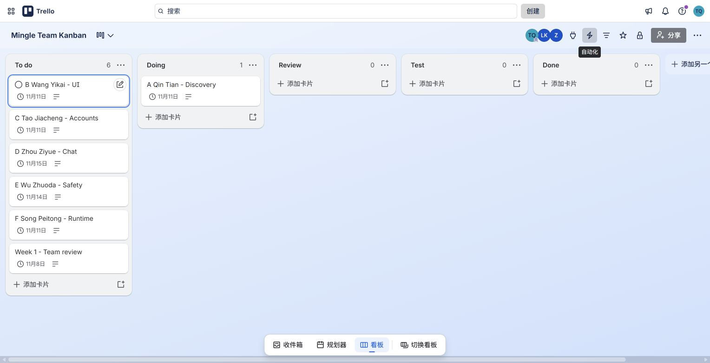
Before: baseline discovery
The preserved baseline JAR, same fictional user and Coffee/New friends filters. No count/chip summary yet.
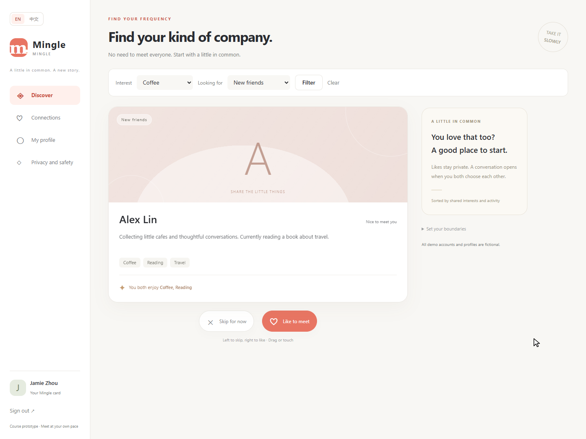
After: visible filters
Eligible count, removable chips and actual shared interests.
Boundary: short drag returns
The same card after a short mouse drag. Zero submitted requests is verified by the script, not by this still image alone.
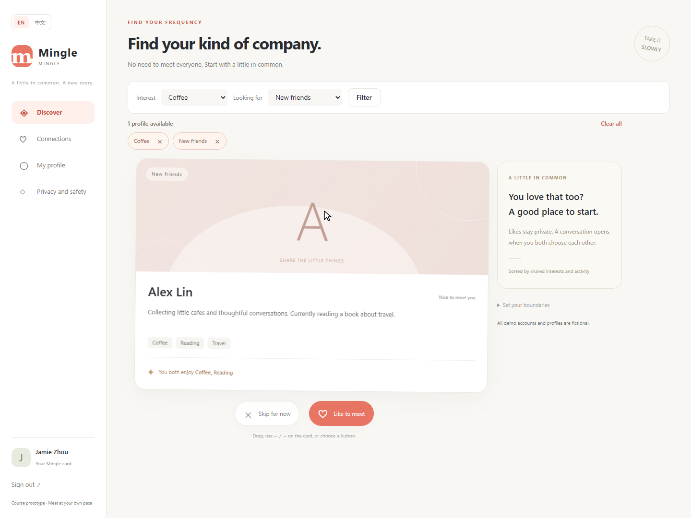
Boundary: eligible skipped profile
The filtered result is empty; one eligible skipped profile can be restored.
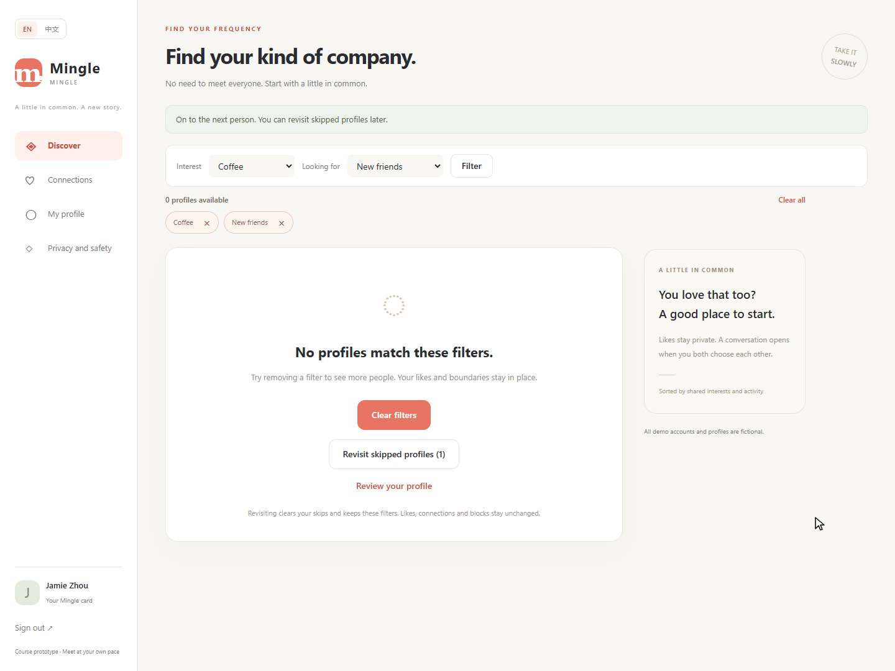
Boundary: no eligible candidate
Clear filters is offered; no ineffective revisit action is shown.
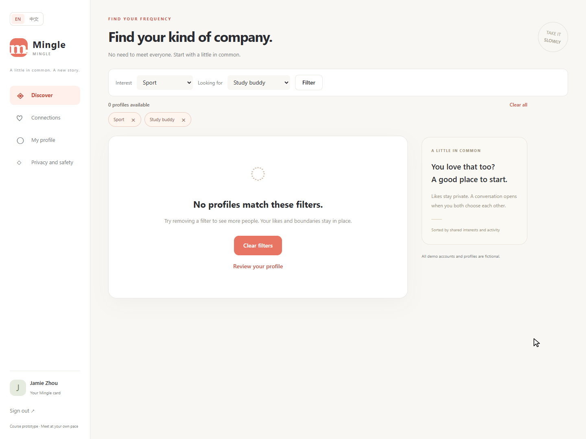
Normal: reciprocal match
Only after both fictional users like each other. Real common interests and the correct participant are shown.
Normal: correct conversation
The match action opened the correct conversation; the other session received the message.
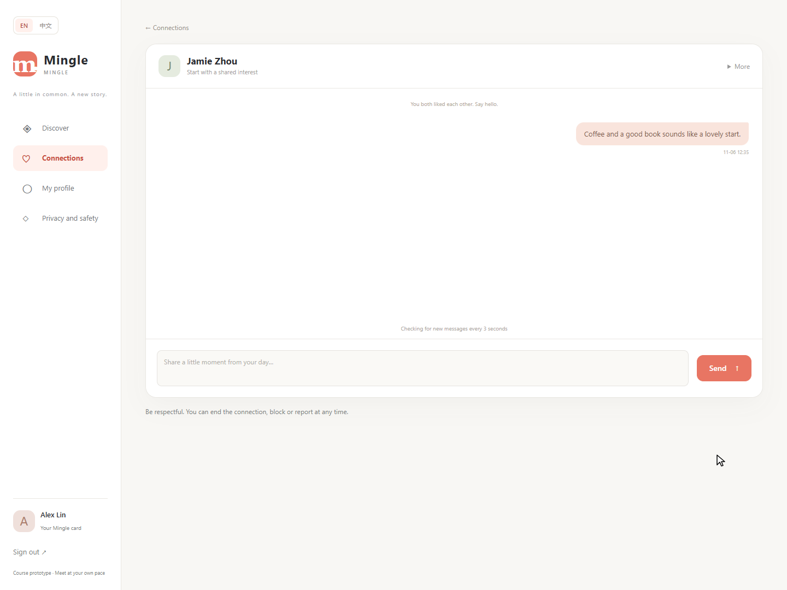
390 px: discovery
Actual full-page capture of the emulated mobile layout.
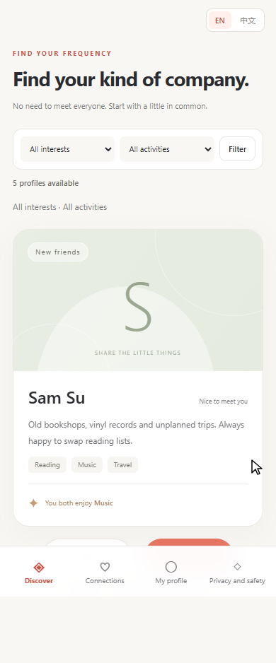
390 px: match feedback
The correct conversation action stays available in reduced-motion mode.
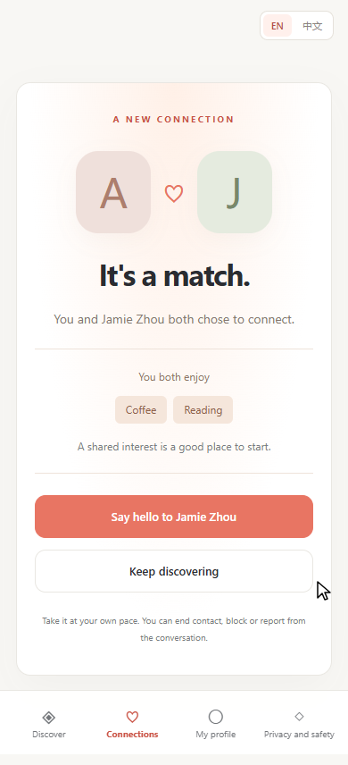
390 px: temporary Chinese UI
The same validated actions are available after switching language.
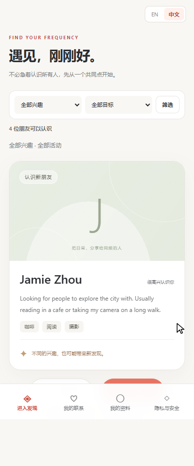
Reduced motion: discovery
A real page capture under reduced-motion preference; submission behavior is checked in the script.
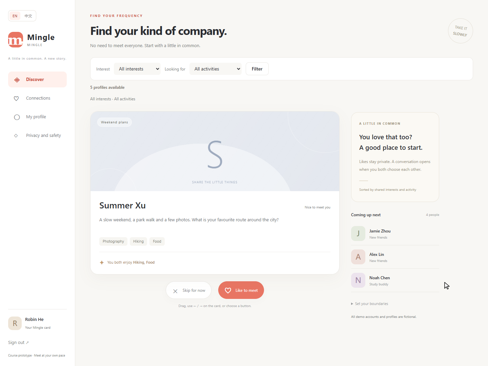
Terminal screenshots — pending actual capture
The former images 13 and 14 were formatted HTML views of saved logs, not terminal screenshots. They have been removed from this evidence gallery and archive. Original Java/browser outputs remain supporting evidence.
Run the live PowerShell workflow from the full project and capture the real terminal at its pause points. Expected filenames: 01_java_terminal.png, 02_browser_terminal.png and 03_github_checks_terminal.png. No placeholder images are supplied, and no human capture is claimed.
Trello: first increment ready for peer review
A is in Review; the other members retain their own work. This capture records actual board state and does not mark the full project complete. Native managed-browser JPEG retained without editing.
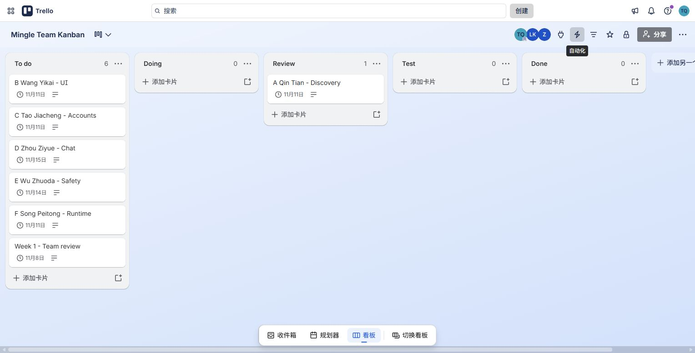
GitHub: Ready for review and passing checks
PR #9 is open and not Draft. The captured implementation commit is e8cd17e; GitHub Java CI passed. The page also shows that no peer review had been submitted at capture time. Later delivery-only commits do not change the implementation pictured here.
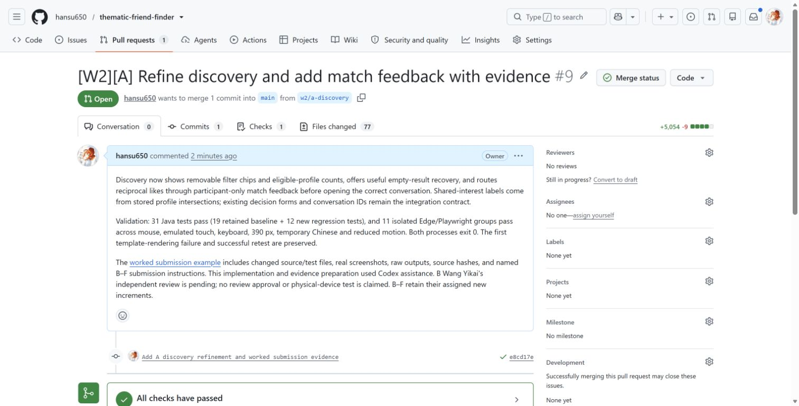
Trello: implementation record and review boundary
The card links the PR and passing CI and explicitly leaves Wang Yikai's independent review pending.
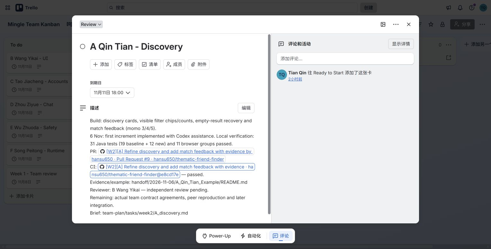
B Wang Yikai — Review A's Discovery Increment
Review status: Pending. Do not mark these complete before performing them. The automated run in this package was prepared with Codex assistance; it is not B's independent reproduction.
- Record the checked commit, machine/JDK, commands and actual results.
- Run the Maven tests and explain one new assertion in DiscoveryRegressionTests.
- Filter Coffee + New friends; remove each chip separately and verify the other filter remains.
- Skip the only matching profile; revisit it; verify the filter survives and a stored like is not cleared.
- In two fictional sessions, complete reciprocal likes, inspect real shared interests and open the correct conversation.
- Confirm a third user cannot open that match page; confirm ending/blocking prevents active feedback.
- Check one short/committed gesture and 390 px controls; identify emulation versus a physical device.
- Record an actual issue or an explicit no-issue finding with the scope reviewed.
- A resolves findings; the reviewer verifies the fix before acceptance/merge.
Reviewer name, review date, evidence and acceptance are intentionally unfilled. A's later peer reproduction of F's work is also pending.
Implemented Contract and Member Discussion
A's discovery increment changes the mutual-like redirect to GET /matches/{connectionId}. That participant-only page opens the existing GET /conversations/{connectionId}; the ID and chat API stay the same. It adds no database columns. Filters use existing English option values, with translated labels only in the UI.
The following are proposals/checkpoints, not recorded team agreements:
| Owners | Decision to confirm before integration |
|---|---|
| A + B | Keep unsaved preview separate from persistence; preserve discovery form IDs and CSRF forms if shared CSS/JS changes. |
| A + C | Document the session invalidation rule after password change and how staff roles are stored/granted. |
| A + C + D | Use per-participant read markers, stable message-ID ordering and a bounded older-history cursor; agree the POST read acknowledgement. |
| A + C + E | Controlled staff setup; ordinary sign-up cannot grant staff access; enforce report access on the server and keep internal notes private. |
| A + F | Treat APP_DATA_DIR as the configured database directory; verify stopped-app backup/restore on disposable data before any real replacement. |
Record the actual agreed fields/routes, decision date and participants in the shared contracts document after discussion. A continues integration when the members' implementations and reviews are ready.
Code screenshots (verified line numbers)
Use the full project in IntelliJ IDEA. Keep the filename/tab, line numbers and method visible. Use Ctrl+G to jump to the first line. Take the actual editor screenshot with Win+Shift+S; do not replace it with a formatted code image.
| Capture | File inside the project | Lines | What to explain |
|---|---|---|---|
| 04_match_controller_code.png | src/main/java/com/example/thematicfriend/discovery/MatchController.java | 24-37 | Current session identity, participant validation, actual shared-interest intersection and match view |
| 05_match_test_code.png (recommended) | src/test/java/com/example/thematicfriend/DiscoveryRegressionTests.java | 124-134 | Assertions for the correct partner, common interest, retained filter and conversation link |
Line ranges were read from the current files on 6 November 2026. They may change after edits. Use soft wraps if a long line would otherwise be cut off. These images complement the actual page and test-run captures; editor screenshots alone do not show that a test passed.